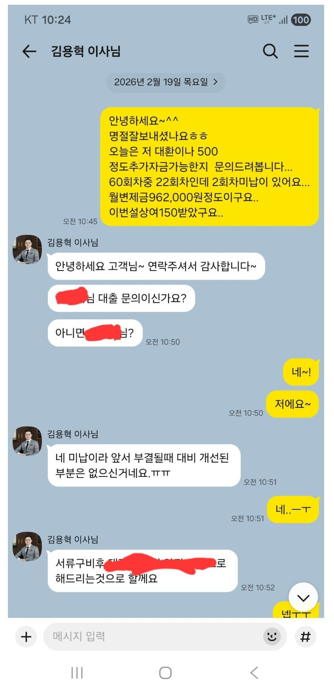
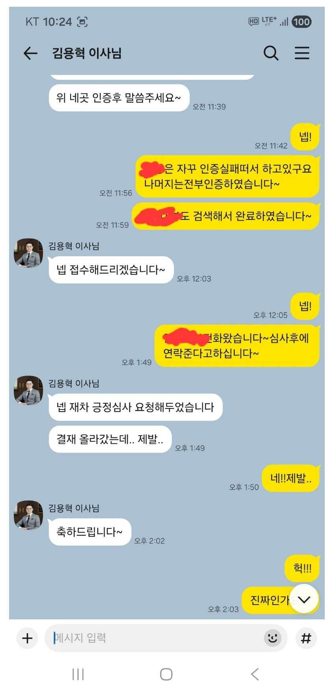
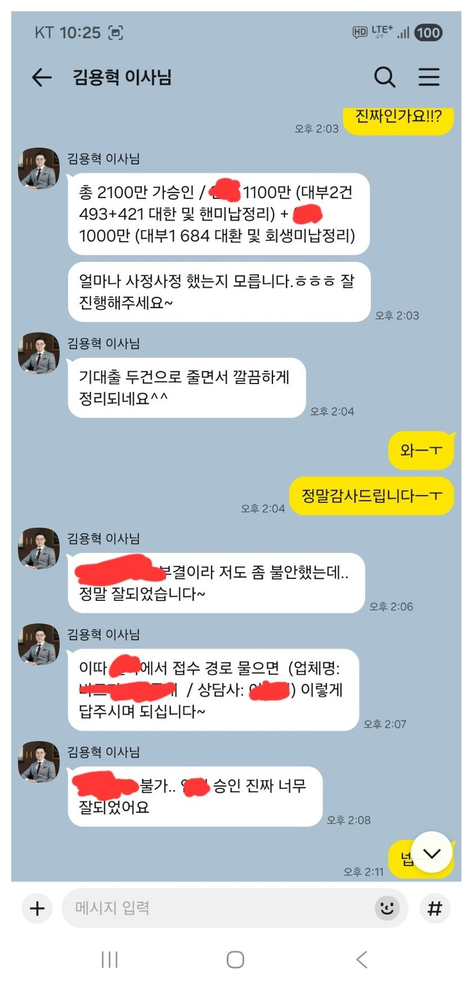
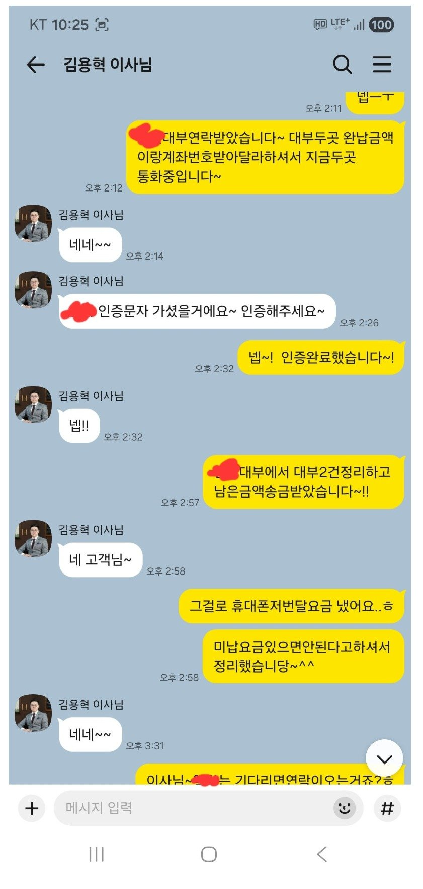
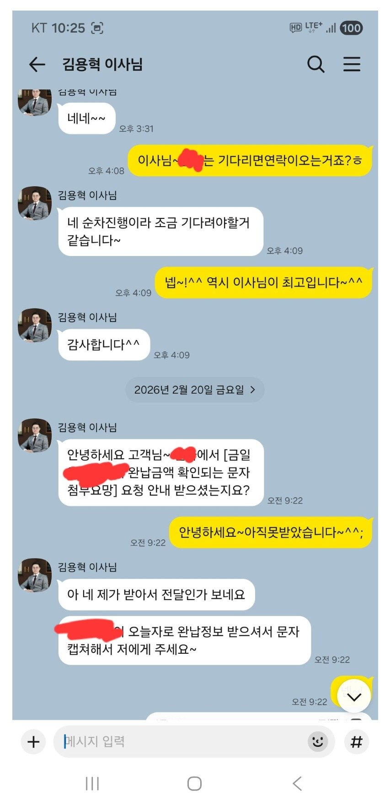
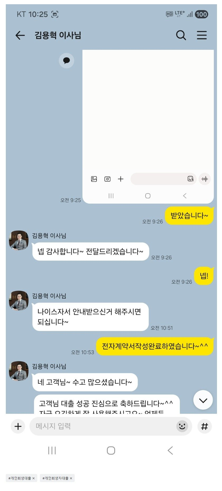

[개인회생자대출 ] 2100만원 승인으로 기대출 3건을 2건으로 줄이고 필요자금도 마련함. 김용혁이사님 항상감사드립니다^^
후기가늦었네요ㅡㅜ
세후 월290정도에 회생 월96만원정도씩내고
대부3건도있는상태였고
개인회생60회차중22회차였는데 미납이2회에
추가자금도필요자금도있었는데...
대부3건을 2건으로통합해주시고 추가자금까지 받게해주셨네요~
김용혁이사님과 서류담당해주신 이현섭과장님
정말감사드립니다~^^






https://cafe.naver.com/cityman88/310311